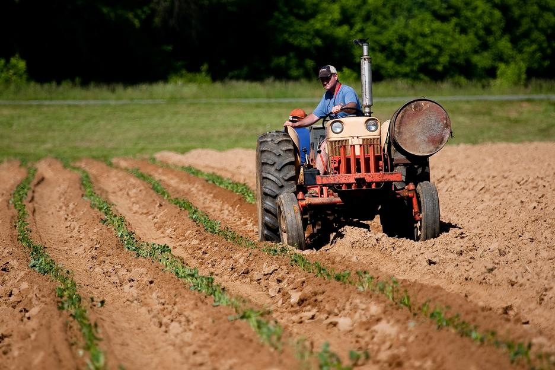

My target audience is for the small towns in my area. The target audience is for late teens to adults. With the intent to be a community based site, I hope to appeal to folks that enjoy the outdoors or work outdoors (rock climbers, backpackers, ranchers, farmers) and families with kids in sports of any kind. With the community calendar we hope to share the activities that are outdoors as well as activities and events that are indoors when the weather turns crummy.
Personas
Persona 1: Jed Williams, Farmer
- -2nd generation farmer
- -4 children
- -Married 26 years
Jed makes a decent living as a farmer. He raises beef cattle and produce as well as alfalfa, grass and wheat to sustain his cattle through the winter. Jed works the farm Monday – Saturday and relies on having accurate weather to help plan for the never-ending list of tasks he needs to do to be successful. Because he is outdoors most of the time, Jed relies on checking the weather on his phone’s browser. During the summer, Jed will check his phone a couple times a day to see if any storms may be possible, especially around alfalfa and grass crop cuttings. During the more volatile times of the year Jed will check the weather almost hourly so he can make the best decisions given the forecast.
Persona 2: Jonathan Stephenson, Projet Manager - young family

- -Young family
- -2 children
- -Married 7 years
Jonathan lives for the weekend and looks forward to any outdoor adventure he and his family can fit in. He works a regular 9-5 Monday – Friday job as a project manager. He uses the outdoors an a disconnect to the demands of the constant contact of work. Being an outdoor enthusiast, Jonathan relies on the weather to plan their next family. He is on the more techy side and uses his laptop at work to check the weather multiple times a day and occasionally outside of work on his phone’s browser.
Scenarios
Can I easily access the weather without fumbling around the site?
Weather looks like it will be stormy, what activities are there near me that I can participate in?
Planning a hike over the weekend, will the weather hold up?
I need 6 days to cut, bale and put up alfalfa. When is the best time to do this so I avoid rain while the alfalfa is cut?
I’ve always wanted to go backpacking into a remote area with little to no light pollution so I can do some star gazing. When is the sky in the best condition to do this?